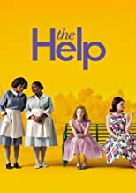

The Help

Skeeter, an aspiring author, decides to write a book on African-American maids and the struggles they face on a daily basis.
Skeeter, an aspiring author, decides to write a book on African-American maids and the struggles they face on a daily basis.
Mary Anning, an acclaimed fossil hunter, is forced to care for a rich visitor's sick wife, and the two develop an intense bond that forces the two women to re-examine their relationship.
Chilean poet Pablo Neruda is deported to an island in Southern Italy, where he befriends his postman. The latter develops a love for poetry and uses it to woo a young woman, Beatrice.
After the death of their father, three young girls find themselves in abject poverty. The responsibility to provide for the family lands on the oldest sisters, who are also dealing with heartbreaks.
Andy Dufresne, a successful banker, is arrested for the murders of his wife and her lover, and is sentenced to life imprisonment at the Shawshank prison. He becomes the most unconventional prisoner.
Jean Valjean, a prisoner, breaks parole in order to start life anew. He soon becomes the caretaker of a young girl but his past comes back to catch up with him.
Roy is a con man who is about to work on a huge job with his partner Frank. However, his life takes an unexpected turn when his estranged daughter Angela tells him to mend his ways.
Paul, the head guard of a prison, meets an inmate, John, an African American who is accused of murdering two girls. His life changes drastically when he discovers that John has a special gift.
James Stevens, a loyal butler to Lord Darlington, grows apprehensive when his master reveals himself to be a Nazi sympathiser prior to the outbreak of World War II.
A teenager from the slums of Mumbai becomes a contestant on the show 'Kaun Banega Crorepati?' When interrogated under suspicion of cheating, he revisits his past, revealing how he had all the answers.